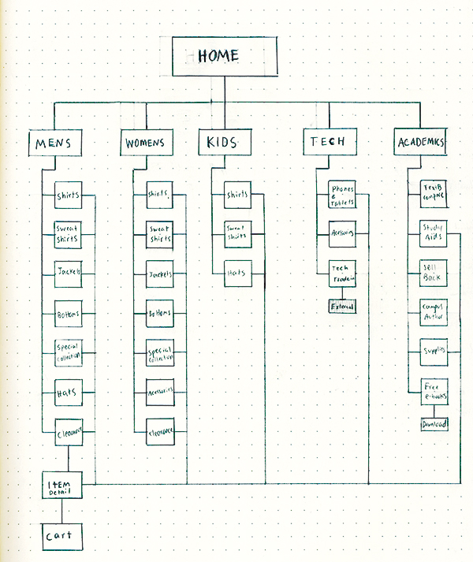

Ewu Bookstore - UX & UI

THE PROJECT
To improve the website of Eastern Washington Universities Bookstore both from a UX and UI perspective.
THE PROBLEM
The bookstores website was not user friendly, was not responsive, and the site navigation from product pages to checkout was confusing to our users. These factors often resulted in cart abandonment partway through the process. In addition to this the site itself was not visually appealing.
THE PROCESS
I found out that we needed to reduce the number of options presented to the user on our homepage. Users do not want to bombarded with options. I worked with the information architecture for sometime and decided to reduce the number of options on our home navigation to just 5.
I began this by conducting research on what helps to improve online checkout experiences as well as how to drive up online sales, which was ultimately our goal.

After figuring out the site structure, I moved into the user flow of our checkout experience. I focused my attention on ensuring that the user would not get confused or have to many unwanted steps. It was also important that the user had a sense of where in the checkout process they were.


THE SOLUTION
Created a mobile friendly site, because that is very important to our users. I created a step by step check-out process that allows our users to see where in the checkout process they are. This allowed for a seamless checkout. I also presented the user with a order summary at the very end of the process in case they had made any errors. Once completing everything else I moved into wireframing, UI, and prototyping of the website for both desktop and mobile.